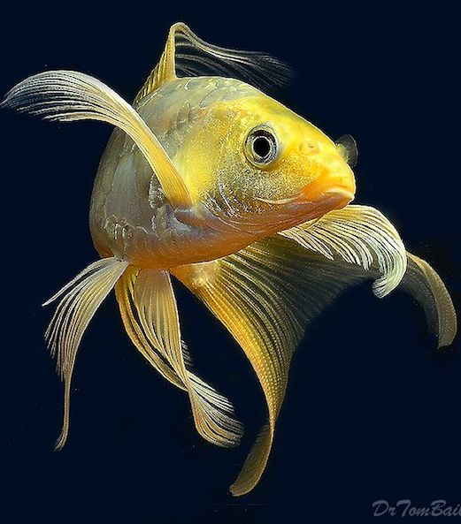

Koi
Koi or more specifically nishikigoi, are ornamental varieties of domesticated common carp that are kept for decorative purposes in outdoor koi ponds or water gardens. Koi varieties are distinguished by coloration, patterning, and scalation..jpg)